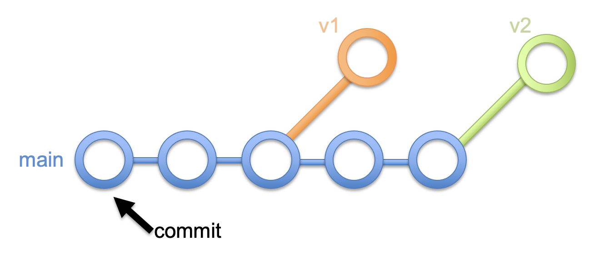
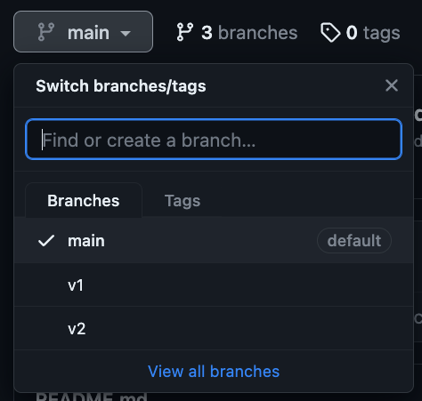

Branching in Git#
Branching is an important concept in Git. Branches allow you to work on different parts of a program, and allows multiple individual to collaborate on a single project simultaneously.
Branching in Git can get confusing quickly, and there are several different branching strategies that teams can implement. We will learn the basics first and then learn a simple branching strategy that allows you to keep track of the updates you make on your own projects.
The Default Branch#
When you create a new git repository, the default branch is created for you. This branch, now called main can be thought of at the trunk of the tree that represents your program.
Note
Older versions of Git used master as the default branch name. You can set the default to main with the following command: git config --global init.defaultBranch main
Making Commits#
As you progress through your work, you can make commits in whatever branch is currently active. A commit is similar to a checkpoint in a game – it preserves the state of your project precisely as it is at the time of the commit. You can always go look at a previous commit, and can even revert all of the changes you’ve made and start over from any commit in your project.
Branching Strategy#
Working with branches is an advanced technique in Git. While working on a project that will be revised over time, the simplest branching strategy is to use the main branch as your “working” branch where all your changes are made. You can create a commit at any point in time you think is worth preserving (such as when you have finished a specific task).
Once you have finished a new “release version” of your project, you can then create a branch specific for that release. This allows you to preserve the state of your project at a specific point in time. It’s similar to a commit, but the difference is that branches are isolated from one another and can be independently accessed from GitHub and Visual Studio Code.
An illustration of this strategy can be seen in the following image:
{kind=link}
In this image, each circle represents a commit. The main branch has several commits that denote ongoing updates to the program. At specific points in time, the developer decided to create two “release versions” by making two branches (labeled “v1” and “v2” in the image). These branches can then be checked out or easily distributed with unique links from the GitHub platform.
Implementing the Branching Strategy#
Assume you have been working on a project on the main branch of your repository. You may have made commits along the way to preserve important points of your work. When you are ready to distribute version 1 of your program, you want to make a “release version” as a separate branch. To do so, perform the following steps (which presume you already have local and remote Git repositories established):
Create a new commit to finalize your work:
git commit -m "your message"Create and “check out” a new branch named
v1:git checkout -b v1
Note
When checking out a branch, you use the -b flag to create a new branch. Once your branches have been established you can move between them with the checkout command alone.
Your program’s state has been duplicated into the
v1branch. You can modify your README file or do any last updates you need. Finalize those with another commit:git commit -m "your message"IMPORTANT: Return to the
mainbranch. This is your working branch, so further changes should occur here:git checkout mainOPTIONAL: if you want to move all your work to your remote repository, you can push all your branches at once with the command:
git push origin --all
Once pushed, you’ll notice that your different branches are available from the branch dropdown menu on GitHub:
{kind=link}